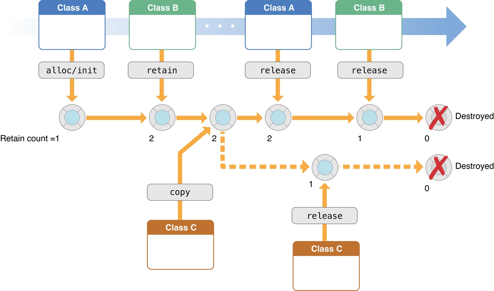

高级内存管理编程指南
大家好，本文是文档翻译计划的第 01 篇，原文是：Advanced Memory Management Programming Guide
内存管理是指在应用运行时申请内存、使用内存、以及不再使用时及时释放内存。一个好的程序应该尽量少的使用内存。在 OC 中，也是一种合理分配内存的方式。
尽管内存管理一般是考虑一个一个的单个对象，但你的目标却是管理整个对象图。你的目标是保证在内存中只保留需要用到的对象。

概览
OC 提供两种内存管理方式。
- 本文介绍的 MRC(manual retain-release)，在这种模式下，你必须通过跟踪对象的状态显式的管理内存，通过「引用计数」这个模型来实现，这个模型是 NSOBject 和运行时环境共同提供的。
- ARC(Automatic Reference Counting)，系统同样是使用引用计数来管理内存，只是会在编译期自动帮你添加合适的内存管理代码。强烈建议您在新项目中使用 ARC。如果使用的是 ARC，你就不用去理解本文档介绍的关于 MRC 的内容，虽然理解 MRC 的细节在有些时候会有一定的帮助。更多关于 ARC 的内容，请参考 Transitioning to ARC Release Notes。
好的练习可以预防内存问题
下面是两个常见的内存管理不当引发的问题：
- 释放或者重写正在使用的数据。这将导致内存损坏，通常会导致应用程序崩溃，或者更糟，导致用户数据损坏。
- 未释放不再使用的数据导致内存泄漏。内存泄漏是指内存不再使用但是一直不被释放。内存泄漏会导致内存占用一直增长，倒是软件性能很差，甚至崩溃。
要从引用计数的角度去看待内存管理问题。然而常常事与愿违，大家倾向于从具体实现细节而不是从目标的角度去考虑内存管理。要从对象所有权以及对象图的角度去考虑内存管理。
Cocoa 使用一个简单的命名约定来表明何时拥有一个方法返回的对象。参考 Memory Management Policy
虽然基本原则比较简单，但是也可以通过一些使用的步骤来让内存管理变得更简单，确保你的应用更贱可靠和健壮，同时最小化内存需求。
自动释放池提供了一种延迟释放对象的机制，当你想释放一个对象，但是又不想立刻释放（比如一个方法 return 的时候），自动释放池在这种场景下是非常有用的。
使用分析工具调试内存问题
为了在编译期识别内存问题，你可以使用 Xcode 的自带工具 Clang Static Analyzer。
如果确实出现内存管理问题，您可以使用其他工具和技术来识别和诊断这些问题。
- 在 Technical Note TN2239 iOS Debugging Magic 中提到了很多工具和技术，特别是使用 NSZombie 来帮助查找被过度释放的对象。
- 你可以使用一些仪器来跟踪引用计数事件、查找内存泄漏，参考 Collecting Data on Your App。
推荐

公众号推荐
欢迎关注我的公众号一起愉快的交流。